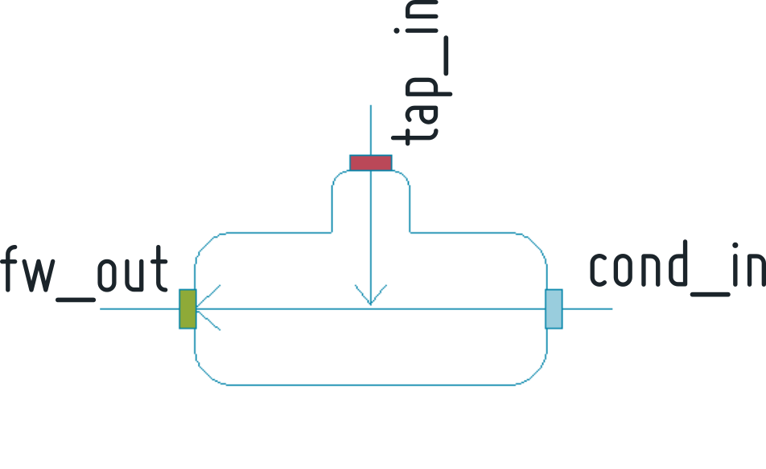
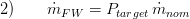
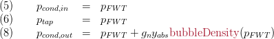
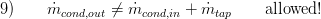

Feedwatertank3
Created Monday 11 February 2013
A stationary model for a feed water tank computing the corresponding feed water tank pressure, the tapping,the feed water and the condenser mass flow rate and the specific enthalpy at the tank outlet. The component has 3 connectors.
1. Purpose of Model

The model is supposed to be used for the simplified simulation of static cases. Its main purpose is to provide appropriate start or nominal values for similar dynamic model versions.
It computes the stationary values of:
- Feed water tank pressure
- Tapping mass flow rate
- Tapping pressure
- Condensate inlet pressure
- Feed water mass flow rate
- Feed water specific enthalpy
- Feed water pressure
2. Level of Detail, Physical Effects Considered and Physical Insight
2.1 Level of Detail
Referring to Brunnemann et al. [1], this model refers to the level of detail L1 because the model only computes a set of parameters for the given scenario.
2.2 Physical Effects Considered
- Conservation of energy
- conservation of mass is checked
3. Limits of Validity
The model is only able to calculate stationary situations.
4. Interfaces
4.1 Steam Signals
For details see Fundamentals:SteamSignal blue , Fundamentals:SteamSignal green and Fundamentals:SteamSignal red .
Tapping inlet: Red connector
Condensate inlet: Blue connector
Condensate outlet: Green connector
4.2 Medium Models
VLE medium model
5. Nomenclature

6. Governing Equations
In general the derived equations for the model consider stationary mass flow balance and momentum.
6.1 Governing Model Equations
The parameter for Feedwater Tank Pressure is modelled using the operating power and the nominal pressure in the tank.

The operating power is also used to implicitly express the mass flow at the outlet of the water tank:

The tapping mas flow rate is given by a ratio between the enthalpies and the condensate mass flow, which follows from an energy balance.

The condensate outlet enthalpy is the bubble enthalpy at the feed water tank pressure,

The pressures at the inlets equal the feedwater tank pressure while the outlet pressure also takes the geodetic pressure difference into account:

Note that the mass balance is not fulfilled by construction, i.e. the sum of inlet mass flows must not equal the outflow mass flow:

7. Remarks for Usage
- The model can only be connected with components with matching connector colour (see Example of Usage in ClaRa:StaticCycles).
- Whenever the mass balance is not steady state (i.e. the sum of inlet mass flows not equal the outflow mass flow) the component will be highlighted yellow.
9. References
[1] Johannes Brunnemann and Friedrich Gottelt, Kai Wellner, Ala Renz, André Thüring, Volker Röder, Christoph Hasenbein, Christian Schulze, Gerhard Schmitz, Jörg Eiden: "Status of ClaRaCCS: Modelling and Simulationof Coal-Fired Power Plants with CO2 capture", 9th Modelica Conference, Munich, Germany, 2012
10. Version History
04.08.2014 - Version:1.0 - Timo Tumforde
Backlinks: ClaRa:StaticCycles